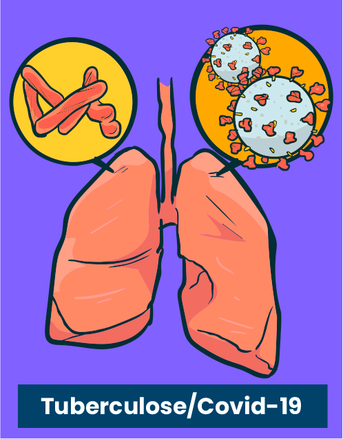
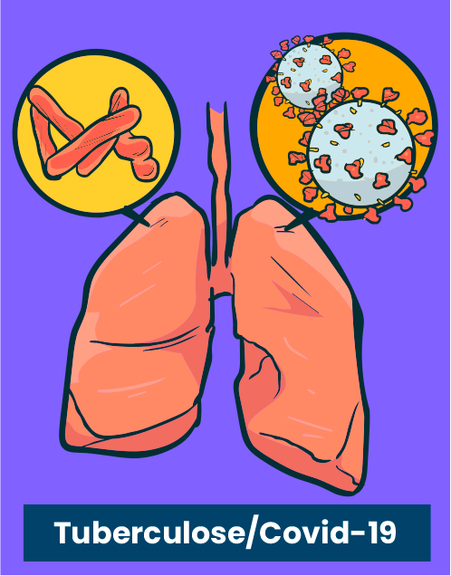

Vamos exemplificar resgatando algumas das doenças e agravos transmissíveis já mencionados nesta aula.
Encontre os pares corretos para relembrar cada caso.
 


No caso da sarna (escabiose), a prevenção consiste, basicamente, em evitar contato com pessoas e roupas contaminadas. Veja que, no âmbito da saúde prisional, é fundamental que, uma vez que se detecte um paciente com escabiose, todos que com ele tenham contato direto sejam examinados e tratados. Dessa forma, interrompe-se a cadeia de transmissão da parasitose.
Você se lembra de que a tuberculose e a covid-19 são doenças transmitidas por gotículas contendo o agente transmissor (bactéria e vírus) que são expelidas no ar por indivíduos doentes? Uma das formas de preveni-las consiste no isolamento de casos suspeitos e de indivíduos doentes até que eles não transmitam mais a doença. Por isso, é extremamente importante identificar numa comunidade todos os casos suspeitos no mesmo período) x fator.
Por serem doenças de transmissão parenteral, o uso de preservativo em todas as relações sexuais, o não compartilhamento de seringas e agulhas, o uso de luvas para manipular feridas e líquidos corporais são medidas estabelecidas para a sua prevenção. Lembre-se de que, no caso da hepatite B, a vacina é considerada a melhor forma de prevenção.